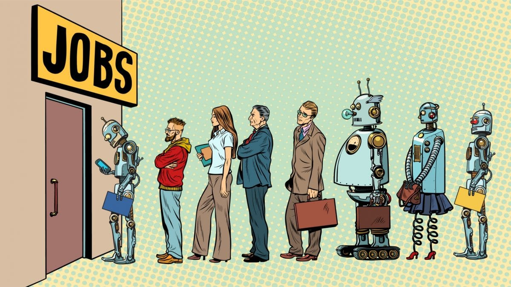

Challenges and Controversies
Privacy and Data Security
Privacy and data security are major challenges in the era of emerging technologies such as artificial intelligence (AI) and machine learning (ML). The use of these technologies often involves the collection, storage, and massive processing of personal data, which can lead to risks of security breaches and privacy violations. Cyber attacks, identity theft, and security violations can have serious consequences for individuals and organizations, affecting the trust and integrity of information systems and services. Additionally, the lack of transparency and control over how data is collected and used can undermine user trust and security, generating concerns about the protection of private life and sensitive information.
Discrimination and Algorithmic Bias
Discrimination and algorithmic bias represent significant ethical and social challenges associated with the use of AI and ML technologies. Machine learning algorithms can be susceptible to prejudices and unfair stereotypes, reflecting and perpetuating discrimination based on characteristics such as race, gender, ethnicity, or sexual orientation. This discrimination can lead to unfair or discriminatory decisions in areas such as recruitment, credit assessment, and criminal justice, thereby affecting equality and individual rights. Addressing this issue requires the development and implementation of fair and impartial algorithms, as well as the regular monitoring and evaluation of their impact on various groups and communities.
Impact on Employment and Social Inequalities
The use of AI and ML technologies can have a significant impact on employment and social inequalities. Automation and digitalization of production and service processes can lead to the loss of jobs in certain sectors and the increase of economic and social inequalities. Vulnerable groups and marginalized communities can be disproportionately affected by these changes, leading to the increase of poverty and social exclusion. Addressing these challenges requires the development of social protection policies and retraining programs, which should help workers adapt to changes in the labor market and maintain their resources and well-being in the face of economic and social turbulences.

Datcu Daniel-Alexandru
Version: 2.0
Copyright © 2024